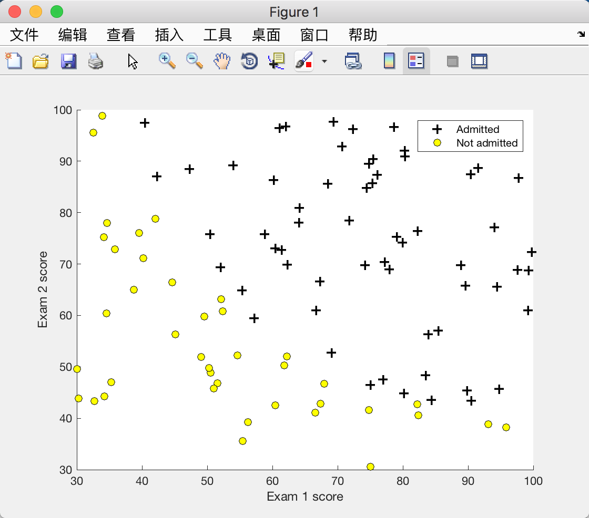
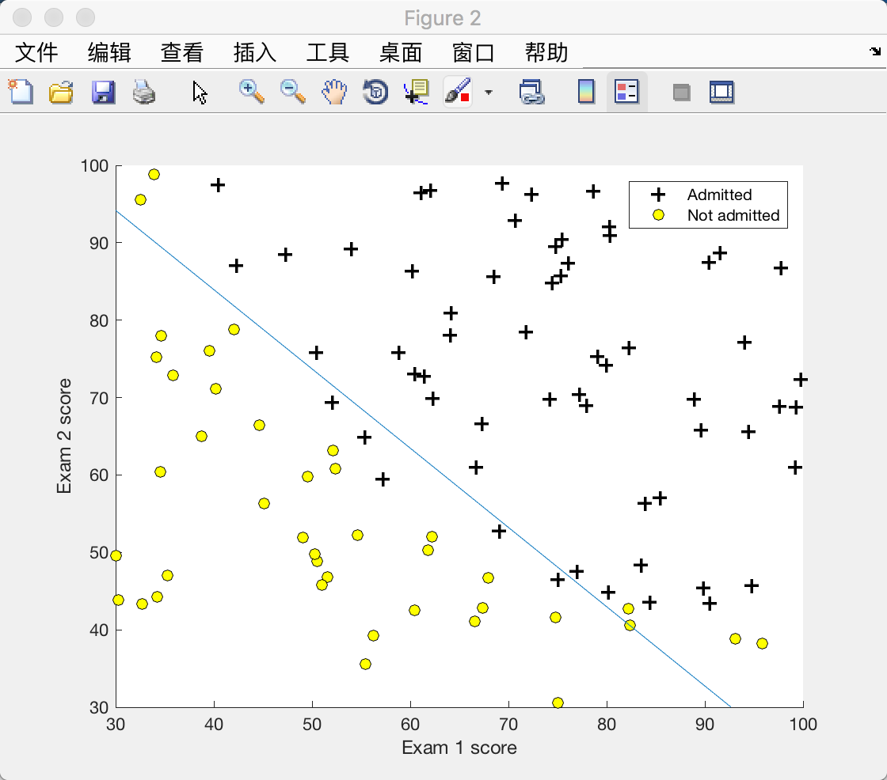
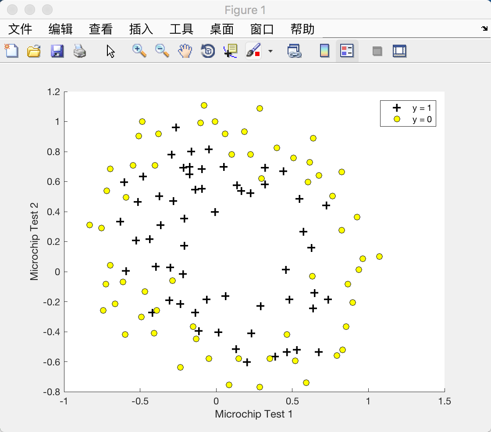
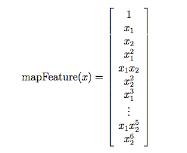
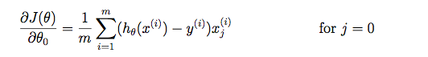
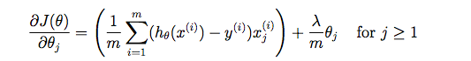
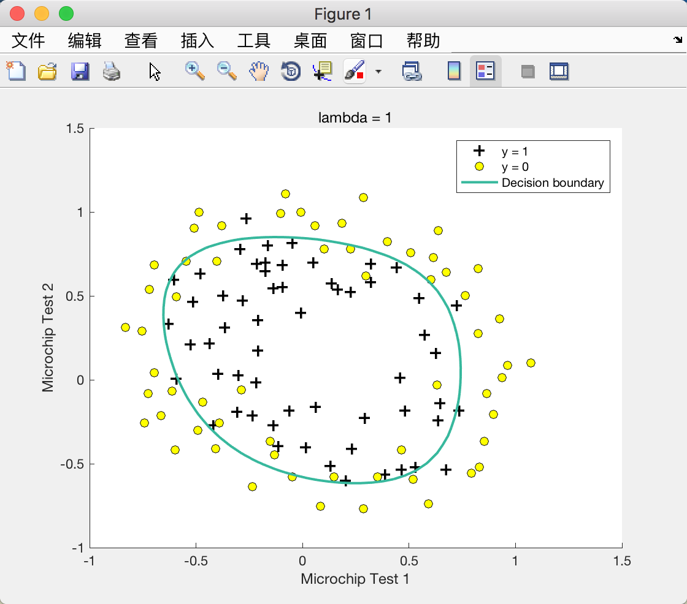
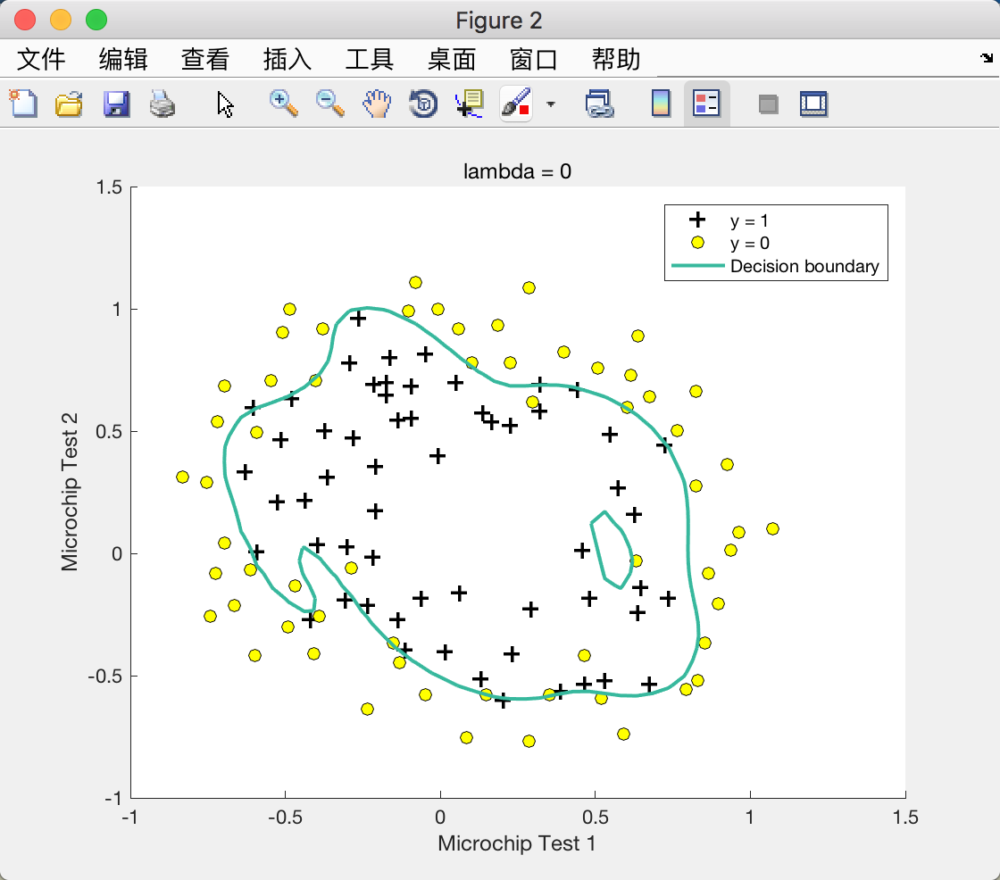
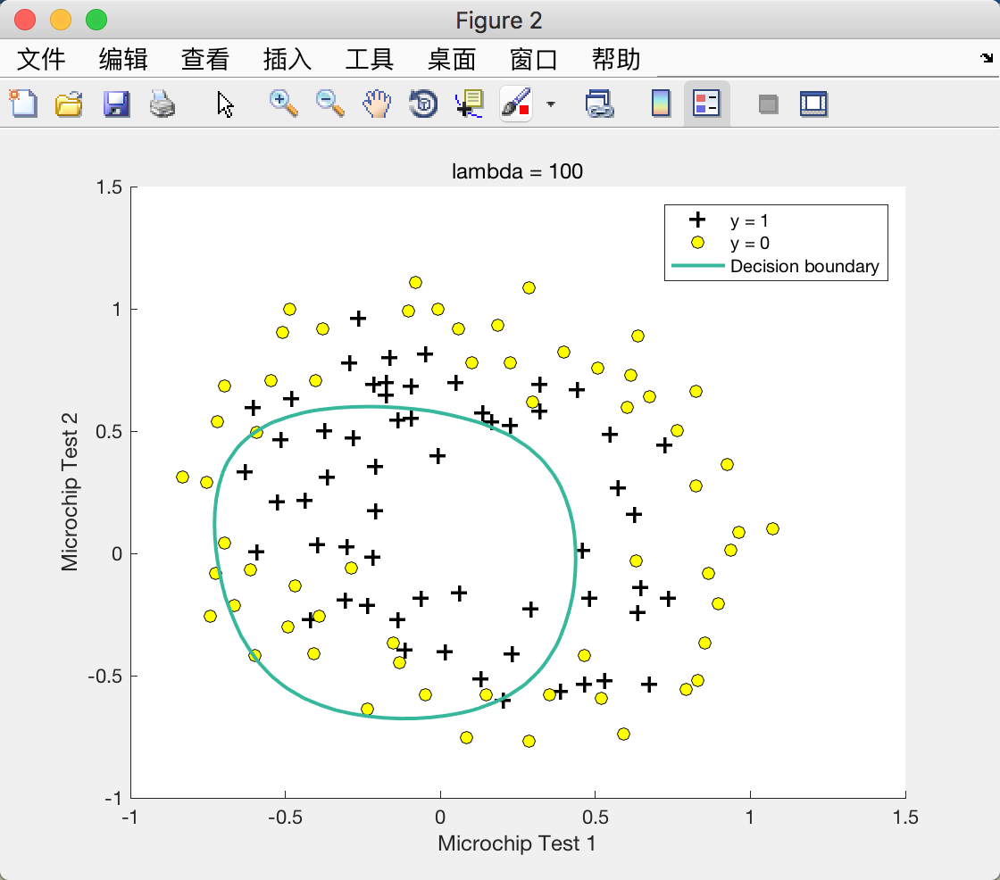

Logistic Regression
编程作业: Logistic Regression
Logistic Regression
Visualizing the data
% plotData.m
function plotData(X, y)
%PLOTDATA Plots the data points X and y into a new figure
% PLOTDATA(x,y) plots the data points with + for the positive examples
% and o for the negative examples. X is assumed to be a Mx2 matrix.
% Create New Figure
figure; hold on;
% ====================== YOUR CODE HERE ======================
% Instructions: Plot the positive and negative examples on a
% 2D plot, using the option 'k+' for the positive
% examples and 'ko' for the negative examples.
%
% Find Indices of Positive and Negative Examples
pos = find(y==1);
neg = find(y==0);
% Plot Examples
plot(X(pos, 1), X(pos, 2), 'k+', 'LineWidth', 2, 'MarkerSize', 7);
plot(X(neg, 1), X(neg, 2), 'ko', 'MarkerFaceColor', 'y', 'MarkerSize', 7);
% =========================================================================
hold off;
end

sigmoid function & Cost function and gradient
% sigmoid.m
function g = sigmoid(z)
%SIGMOID Compute sigmoid function
% g = SIGMOID(z) computes the sigmoid of z.
% You need to return the following variables correctly
g = zeros(size(z));
% ====================== YOUR CODE HERE ======================
% Instructions: Compute the sigmoid of each value of z (z can be a matrix,
% vector or scalar).
g = 1 ./ (1 + exp(-z));
% =============================================================
end
% costFunction.m
function [J, grad] = costFunction(theta, X, y)
%COSTFUNCTION Compute cost and gradient for logistic regression
% J = COSTFUNCTION(theta, X, y) computes the cost of using theta as the
% parameter for logistic regression and the gradient of the cost
% w.r.t. to the parameters.
% Initialize some useful values
m = length(y); % number of training examples
% You need to return the following variables correctly
J = 0;
grad = zeros(size(theta));
% ====================== YOUR CODE HERE ======================
% Instructions: Compute the cost of a particular choice of theta.
% You should set J to the cost.
% Compute the partial derivatives and set grad to the partial
% derivatives of the cost w.r.t. each parameter in theta
%
% Note: grad should have the same dimensions as theta
%
J = -1 * sum(y .* log(sigmoid(X * theta)) + (1 - y) .* log(1 - sigmoid(X * theta))) / m;
grad = X' * (sigmoid(X * theta) - y) / m;
% =============================================================
end
Learning parameters using fminunc
% ex2.m
%% ============= Part 3: Optimizing using fminunc =============
% In this exercise, you will use a built-in function (fminunc) to find the
% optimal parameters theta.
% Set options for fminunc
options = optimset('GradObj', 'on', 'MaxIter', 400);
% Run fminunc to obtain the optimal theta
% This function will return theta and the cost
[theta, cost] = ...
fminunc(@(t)(costFunction(t, X, y)), initial_theta, options);
Evaluating logistic regression
function p = predict(theta, X)
%PREDICT Predict whether the label is 0 or 1 using learned logistic
%regression parameters theta
% p = PREDICT(theta, X) computes the predictions for X using a
% threshold at 0.5 (i.e., if sigmoid(theta'*x) >= 0.5, predict 1)
m = size(X, 1); % Number of training examples
% You need to return the following variables correctly
p = zeros(m, 1);
% ====================== YOUR CODE HERE ======================
% Instructions: Complete the following code to make predictions using
% your learned logistic regression parameters.
% You should set p to a vector of 0's and 1's
%
p(sigmoid(X * theta) >= 0.5) = 1;
% =========================================================================
end

Regularized logistic regression
Visualizing the data

Map the features

% mapFeature.m
function out = mapFeature(X1, X2)
% MAPFEATURE Feature mapping function to polynomial features
%
% MAPFEATURE(X1, X2) maps the two input features
% to quadratic features used in the regularization exercise.
%
% Returns a new feature array with more features, comprising of
% X1, X2, X1.^2, X2.^2, X1*X2, X1*X2.^2, etc..
%
% Inputs X1, X2 must be the same size
%
degree = 6;
out = ones(size(X1(:,1)));
for i = 1:degree
for j = 0:i
out(:, end+1) = (X1.^(i-j)).*(X2.^j);
end
end
end
Cost function and gradient
The regularized cost function in logistic regression is:

The gradient of the cost function is a vector where the jth element is defined as follows:


% costFunctionReg.m
function [J, grad] = costFunctionReg(theta, X, y, lambda)
%COSTFUNCTIONREG Compute cost and gradient for logistic regression with regularization
% J = COSTFUNCTIONREG(theta, X, y, lambda) computes the cost of using
% theta as the parameter for regularized logistic regression and the
% gradient of the cost w.r.t. to the parameters.
% Initialize some useful values
m = length(y); % number of training examples
% You need to return the following variables correctly
J = 0;
grad = zeros(size(theta));
% ====================== YOUR CODE HERE ======================
% Instructions: Compute the cost of a particular choice of theta.
% You should set J to the cost.
% Compute the partial derivatives and set grad to the partial
% derivatives of the cost w.r.t. each parameter in theta
theta_1 = [0; theta(2:end)];
J = -1 * sum(y .* (log(sigmoid(X * theta))) + (1 - y) .* (log(1 - sigmoid(X * theta)))) / m + lambda * theta_1' * theta_1 / (2 * m);
grad = X' * (sigmoid(X * theta) - y) / m + (lambda / m) * theta_1;
% =============================================================
end
Learning parameters using fminunc
%% ============= Part 2: Regularization and Accuracies =============
% Optional Exercise:
% In this part, you will get to try different values of lambda and
% see how regularization affects the decision coundart
%
% Try the following values of lambda (0, 1, 10, 100).
%
% How does the decision boundary change when you vary lambda? How does
% the training set accuracy vary?
%
% Initialize fitting parameters
initial_theta = zeros(size(X, 2), 1);
% Set regularization parameter lambda to 1 (you should vary this)
lambda = 1;
% Set Options
options = optimset('GradObj', 'on', 'MaxIter', 400);
% Optimize
[theta, J, exit_flag] = ...
fminunc(@(t)(costFunctionReg(t, X, y, lambda)), initial_theta, options);
λ = 1 时：

λ = 0 （Overfitting）时：

λ = 100 （Underfitting）时：
